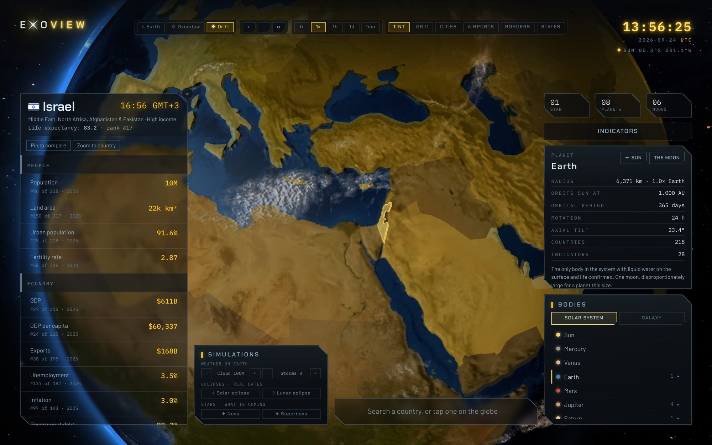
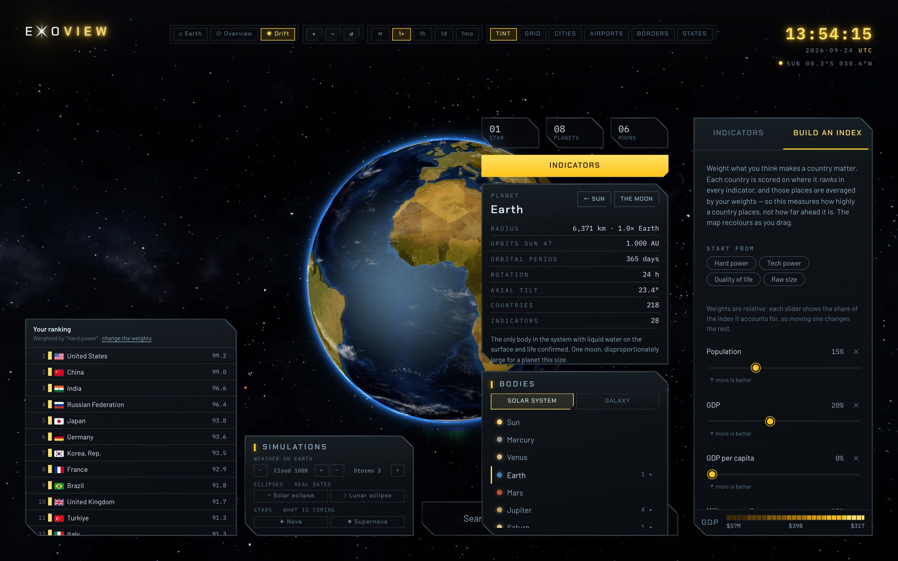
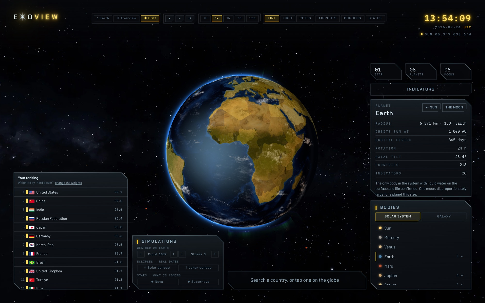
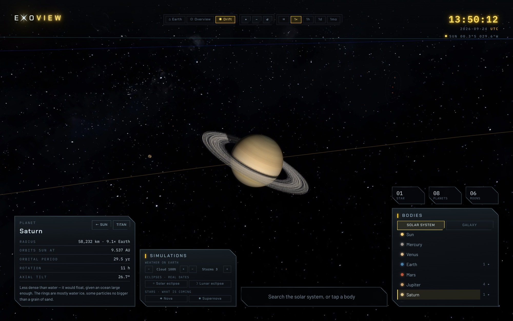
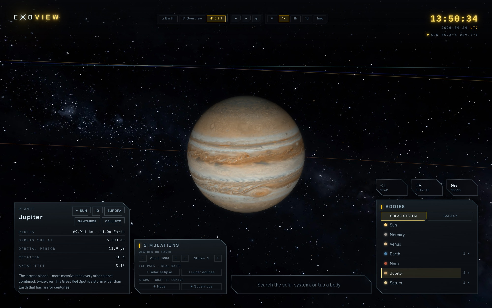
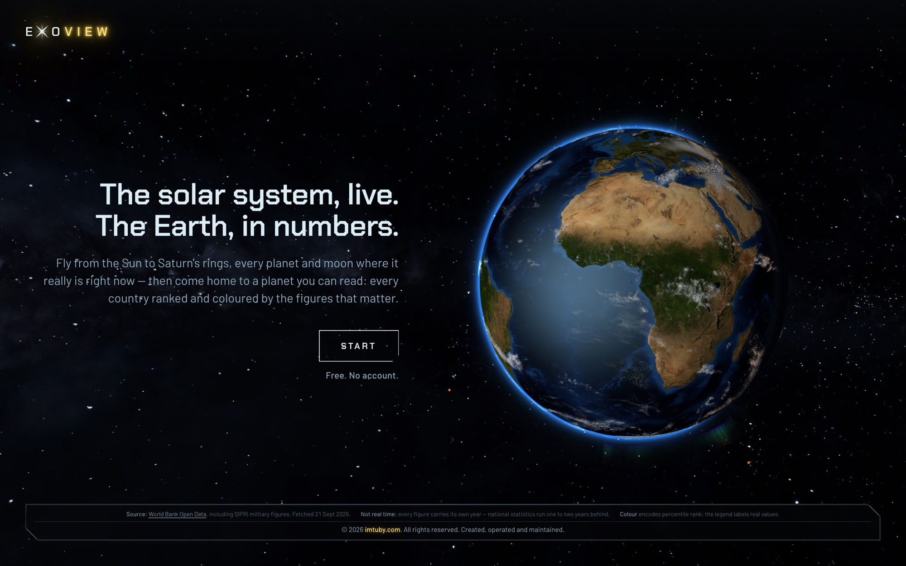
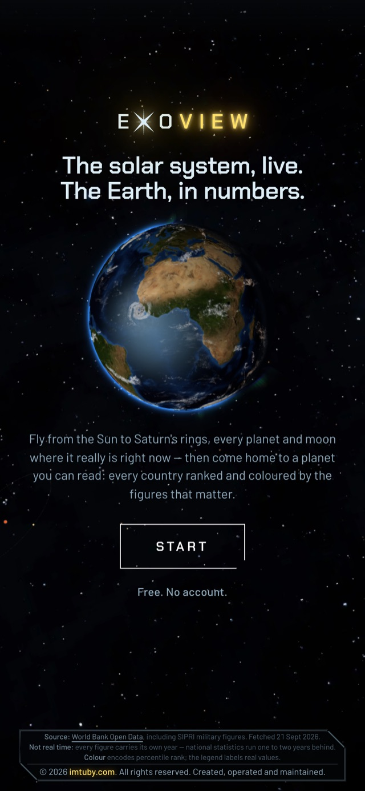
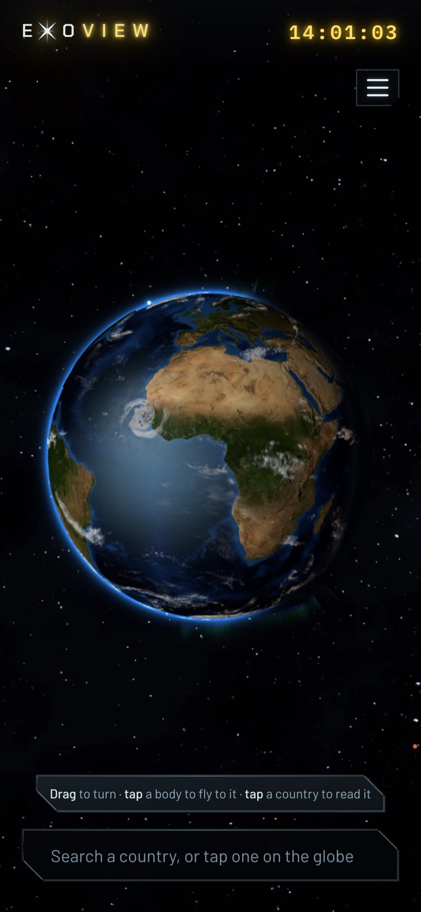

The solar system, live - every planet and moon where it really is right now - and an Earth you can read: 217 countries coloured by 28 World Bank indicators, and a ranking you weight yourself.
Country-ranking sites are everywhere, and they all look like a spreadsheet with a map glued to the side. Exo-View starts from the other end: a real planet is the entire interface. The globe fills the window, every panel floats over it, and the camera goes from a country's borders out past Neptune without a mode switch.
Two things sit on top of that planet. A weighted index you build yourself - so the question is “what makes a country matter to you”, not the site's own score - and a real sky: true relative orbital spacing, real radii and tilt, a live day/night terminator, and the actual positions of the planets for this instant.
Click a country or search for it and the camera flies in. The zoom is derived from the country's angular size and the camera's field of view, so Monaco ends up closer than Russia instead of both getting the same multiplier. The profile lists every indicator with its rank out of how many reported it, and the year it belongs to.

The feature the product exists for. Each slider shows its share of the total weight, not its raw position - one slider at 20 with the rest at zero is 100% of the index, and used to claim 20%. Four presets mean nobody opens the builder to a wall of zeros, and the floating panel says “Your ranking”, because it is an opinion, not the site's verdict.


Earth is one body in a list like any other - there is no “back” button, because picking Earth is the way home. Each body's card carries real radius and its ratio to Earth, orbit, period, rotation and tilt.


The landing is the product, not a picture of it: the same live Earth, already turning. The globe is its own bundle chunk, fetched after first paint, so the panels, rankings and builder are usable before three.js has finished downloading.

The instrument deck folds into a drawer and the planet keeps the whole screen. Search stays pinned at the bottom, under the thumb.


key:weight pairs, not positions, so adding an indicator tomorrow can't break a link shared today.